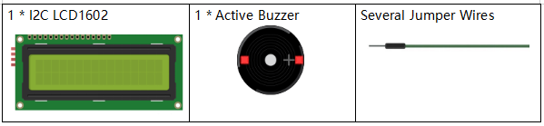
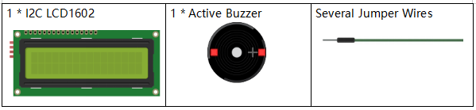
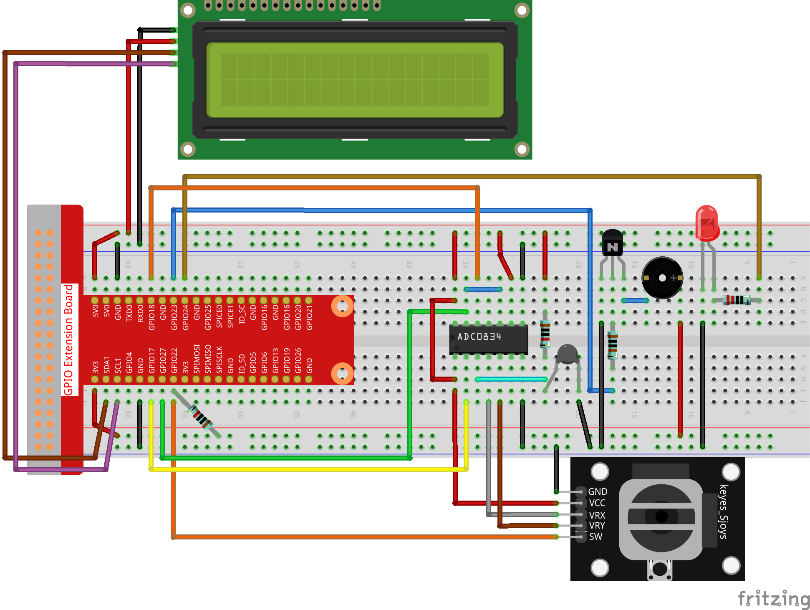

Note
Bonjour et bienvenue dans la communauté SunFounder pour les passionnés de Raspberry Pi, Arduino et ESP32 sur Facebook ! Plongez dans l’univers de Raspberry Pi, Arduino et ESP32 avec d’autres passionnés.
Pourquoi rejoindre ?
Support d’experts : Résolvez vos problèmes après-vente et vos défis techniques grâce à l’aide de notre communauté et de notre équipe.
Apprendre & Partager : Échangez des astuces et des tutoriels pour perfectionner vos compétences.
Aperçus exclusifs : Accédez en avant-première aux annonces de nouveaux produits et aux aperçus exclusifs.
Réductions spéciales : Profitez de réductions exclusives sur nos nouveaux produits.
Promotions festives et concours : Participez à des concours et à des promotions spéciales pendant les fêtes.
👉 Prêt à explorer et créer avec nous ? Cliquez sur [Ici] et rejoignez-nous dès aujourd’hui !
3.1.8 Moniteur de surchauffe
Introduction
Vous pourriez vouloir créer un dispositif de surveillance de surchauffe pour diverses situations, par exemple, dans une usine, si vous souhaitez qu’une alarme se déclenche et que la machine s’arrête automatiquement en cas de surchauffe du circuit. Dans cette leçon, nous utiliserons une thermistance, un joystick, un buzzer, une LED et un écran LCD pour créer un dispositif intelligent de surveillance de la température dont le seuil est ajustable.
Composants
 

Schéma de câblage
T-Board Name |
physical |
wiringPi |
BCM |
GPIO17 |
Pin 11 |
0 |
17 |
GPIO18 |
Pin 12 |
1 |
18 |
GPIO27 |
Pin 13 |
2 |
27 |
GPIO22 |
Pin15 |
3 |
22 |
GPIO23 |
Pin16 |
4 |
23 |
GPIO24 |
Pin18 |
5 |
24 |
SDA1 |
Pin 3 |
||
SCL1 |
Pin 5 |
{kind=link}
Procédures expérimentales
Étape 1 : Montez le circuit.
{kind=link}
Pour les utilisateurs du langage C
Étape 2 : Accédez au dossier du code.
cd ~/davinci-kit-for-raspberry-pi/c/3.1.8/
Étape 3 : Compilez le code.
gcc 3.1.8_OverheatMonitor.c -lwiringPi -lm
Étape 4 : Exécutez le fichier exécutable.
sudo ./a.out
- Lorsque le code s’exécute, la température actuelle et le seuil de haute température
40 s’affichent sur l’écran I2C LCD1602. Si la température actuelle dépasse ce seuil, le buzzer et la LED se déclenchent pour vous alerter.
Note
Si cela ne fonctionne pas après l’exécution ou si un message d’erreur apparaît : "wiringPi.h: Aucun fichier ou dossier de ce type », veuillez vous référer à C code is not working?.
Le joystick vous permet d’ajuster le seuil de haute température. En déplaçant le joystick sur l’axe X et Y, vous pouvez ajuster (augmenter ou diminuer) le seuil de température. Appuyez à nouveau sur le joystick pour réinitialiser le seuil à sa valeur initiale.
Explication du code
int get_joystick_value(){
uchar x_val;
uchar y_val;
x_val = get_ADC_Result(1);
y_val = get_ADC_Result(2);
if (x_val > 200){
return 1;
}
else if(x_val < 50){
return -1;
}
else if(y_val > 200){
return -10;
}
else if(y_val < 50){
return 10;
}
else{
return 0;
}
}
Cette fonction lit les valeurs de X et Y. Si X>200, elle renvoie « 1 »; X<50, renvoie « -1 »; y>200, renvoie « -10 »; et y<50, renvoie « 10 ».
void upper_tem_setting(){
write(0, 0, "Upper Adjust:");
int change = get_joystick_value();
upperTem = upperTem + change;
char str[6];
snprintf(str,3,"%d",upperTem);
write(0,1,str);
int len;
len = strlen(str);
write(len,1," ");
delay(100);
}
Cette fonction permet de régler le seuil et de l’afficher sur l’écran I2C LCD1602.
double temperature(){
unsigned char temp_value;
double Vr, Rt, temp, cel, Fah;
temp_value = get_ADC_Result(0);
Vr = 5 * (double)(temp_value) / 255;
Rt = 10000 * (double)(Vr) / (5 - (double)(Vr));
temp = 1 / (((log(Rt/10000)) / 3950)+(1 / (273.15 + 25)));
cel = temp - 273.15;
Fah = cel * 1.8 +32;
return cel;
}
Lit la valeur analogique du CH0 (thermistance) de ADC0834 et la convertit en valeur de température.
void monitoring_temp(){
char str[6];
double cel = temperature();
snprintf(str,6,"%.2f",cel);
write(0, 0, "Temp: ");
write(6, 0, str);
snprintf(str,3,"%d",upperTem);
write(0, 1, "Upper: ");
write(7, 1, str);
delay(100);
if(cel >= upperTem){
digitalWrite(buzzPin, HIGH);
digitalWrite(LedPin, HIGH);
}
else if(cel < upperTem){
digitalWrite(buzzPin, LOW);
digitalWrite(LedPin, LOW);
}
}
Lorsque le code s’exécute, la température actuelle et le seuil de haute température 40 s’affichent sur I2C LCD1602. Si la température actuelle dépasse ce seuil, le buzzer et la LED se déclenchent pour vous alerter.
int main(void)
{
setup();
int lastState =1;
int stage=0;
while (1)
{
int currentState = digitalRead(Joy_BtnPin);
if(currentState==1 && lastState == 0){
stage=(stage+1)%2;
delay(100);
lcd_clear();
}
lastState=currentState;
if (stage==1){
upper_tem_setting();
}
else{
monitoring_temp();
}
}
return 0;
}
La fonction main() contient le processus global du programme comme suit :
1) Lorsque le programme démarre, la valeur initiale de stage est 0, et la température actuelle ainsi que le seuil de haute température 40 s’affichent sur
I2C LCD1602. Si la température actuelle dépasse ce seuil, le buzzer et la LED se déclenchent pour vous alerter.
2) Appuyez sur le joystick, et stage passera à 1, vous permettant d’ajuster le seuil de haute température. En déplaçant le joystick sur l’axe X et Y, vous pouvez ajuster (augmenter ou diminuer) le seuil actuel. Appuyez à nouveau sur le joystick pour réinitialiser le seuil à sa valeur initiale.
Pour les utilisateurs du langage Python
Étape 2 : Accédez au dossier du code.
cd ~/davinci-kit-for-raspberry-pi/python/
Étape 3 : Exécutez le fichier exécutable.
sudo python3 3.1.8_OverheatMonitor.py
Lorsque le code s’exécute, la température actuelle et le seuil de haute température 40 s’affichent sur l’écran I2C LCD1602. Si la température actuelle dépasse ce seuil, le buzzer et la LED se déclenchent pour vous alerter.
Le joystick vous permet d’ajuster le seuil de haute température. En déplaçant le joystick sur l’axe X et Y, vous pouvez ajuster (augmenter ou diminuer) le seuil de température. Appuyez à nouveau sur le joystick pour réinitialiser le seuil à sa valeur initiale.
Code
Note
Vous pouvez Modifier/Réinitialiser/Copier/Exécuter/Arrêter le code ci-dessous. Mais avant cela, vous devez vous rendre sur le chemin du code source comme davinci-kit-for-raspberry-pi/python.
import LCD1602
import RPi.GPIO as GPIO
import ADC0834
import time
import math
Joy_BtnPin = 22
buzzPin = 23
ledPin = 24
upperTem = 40
def setup():
ADC0834.setup()
GPIO.setmode(GPIO.BCM)
GPIO.setup(ledPin, GPIO.OUT, initial=GPIO.LOW)
GPIO.setup(buzzPin, GPIO.OUT, initial=GPIO.LOW)
GPIO.setup(Joy_BtnPin, GPIO.IN, pull_up_down=GPIO.PUD_UP)
LCD1602.init(0x27, 1)
def get_joystick_value():
x_val = ADC0834.getResult(1)
y_val = ADC0834.getResult(2)
if(x_val > 200):
return 1
elif(x_val < 50):
return -1
elif(y_val > 200):
return -10
elif(y_val < 50):
return 10
else:
return 0
def upper_tem_setting():
global upperTem
LCD1602.write(0, 0, 'Upper Adjust: ')
change = int(get_joystick_value())
upperTem = upperTem + change
strUpperTem = str(upperTem)
LCD1602.write(0, 1, strUpperTem)
LCD1602.write(len(strUpperTem),1, ' ')
time.sleep(0.1)
def temperature():
analogVal = ADC0834.getResult()
Vr = 5 * float(analogVal) / 255
Rt = 10000 * Vr / (5 - Vr)
temp = 1/(((math.log(Rt / 10000)) / 3950) + (1 / (273.15+25)))
Cel = temp - 273.15
Fah = Cel * 1.8 + 32
return round(Cel,2)
def monitoring_temp():
global upperTem
Cel=temperature()
LCD1602.write(0, 0, 'Temp: ')
LCD1602.write(0, 1, 'Upper: ')
LCD1602.write(6, 0, str(Cel))
LCD1602.write(7, 1, str(upperTem))
time.sleep(0.1)
if Cel >= upperTem:
GPIO.output(buzzPin, GPIO.HIGH)
GPIO.output(ledPin, GPIO.HIGH)
else:
GPIO.output(buzzPin, GPIO.LOW)
GPIO.output(ledPin, GPIO.LOW)
def loop():
lastState=1
stage=0
while True:
currentState=GPIO.input(Joy_BtnPin)
if currentState==1 and lastState ==0:
stage=(stage+1)%2
time.sleep(0.1)
LCD1602.clear()
lastState=currentState
if stage == 1:
upper_tem_setting()
else:
monitoring_temp()
def destroy():
LCD1602.clear()
ADC0834.destroy()
GPIO.cleanup()
if __name__ == '__main__': # Programme démarrant ici
try:
setup()
while True:
loop()
except KeyboardInterrupt: # Quand 'Ctrl+C' est pressé, la fonction destroy() sera exécutée.
destroy()
Explication du code
def get_joystick_value():
x_val = ADC0834.getResult(1)
y_val = ADC0834.getResult(2)
if(x_val > 200):
return 1
elif(x_val < 50):
return -1
elif(y_val > 200):
return -10
elif(y_val < 50):
return 10
else:
return 0
Cette fonction lit les valeurs de X et Y. Si X>200, elle renvoie « 1 »; X<50, elle renvoie « -1 »; y>200, elle renvoie « -10 »; et y<50, elle renvoie « 10 ».
def upper_tem_setting():
global upperTem
LCD1602.write(0, 0, 'Upper Adjust: ')
change = int(get_joystick_value())
upperTem = upperTem + change
LCD1602.write(0, 1, str(upperTem))
LCD1602.write(len(strUpperTem),1, ' ')
time.sleep(0.1)
Cette fonction permet d’ajuster le seuil et de l’afficher sur l’écran I2C LCD1602.
def temperature():
analogVal = ADC0834.getResult()
Vr = 5 * float(analogVal) / 255
Rt = 10000 * Vr / (5 - Vr)
temp = 1/(((math.log(Rt / 10000)) / 3950) + (1 / (273.15+25)))
Cel = temp - 273.15
Fah = Cel * 1.8 + 32
return round(Cel,2)
Lit la valeur analogique du CH0 (thermistance) de ADC0834 et la convertit en valeur de température.
def monitoring_temp():
global upperTem
Cel=temperature()
LCD1602.write(0, 0, 'Temp: ')
LCD1602.write(0, 1, 'Upper: ')
LCD1602.write(6, 0, str(Cel))
LCD1602.write(7, 1, str(upperTem))
time.sleep(0.1)
if Cel >= upperTem:
GPIO.output(buzzPin, GPIO.HIGH)
GPIO.output(ledPin, GPIO.HIGH)
else:
GPIO.output(buzzPin, GPIO.LOW)
GPIO.output(ledPin, GPIO.LOW)
Lorsque le code s’exécute, la température actuelle et le seuil de haute température 40 s’affichent sur I2C LCD1602. Si la température actuelle dépasse ce seuil, le buzzer et la LED se déclenchent pour vous alerter.
def loop():
lastState=1
stage=0
while True:
currentState=GPIO.input(Joy_BtnPin)
if currentState==1 and lastState ==0:
stage=(stage+1)%2
time.sleep(0.1)
LCD1602.clear()
lastState=currentState
if stage == 1:
upper_tem_setting()
else:
monitoring_temp()
La fonction main() contient l’ensemble du processus du programme, comme suit :
1) Lorsque le programme démarre, la valeur initiale de stage est 0, et la température actuelle ainsi que le seuil de haute température 40 s’affichent sur I2C LCD1602. Si la température actuelle dépasse ce seuil, le buzzer et la LED se déclenchent pour vous alerter.
2) Appuyez sur le Joystick, et stage passera à 1, vous permettant d’ajuster le seuil de haute température. En déplaçant le Joystick sur l’axe X et Y, vous pouvez ajuster (augmenter ou diminuer) le seuil de température actuel. Appuyez à nouveau sur le Joystick pour réinitialiser le seuil à sa valeur initiale.